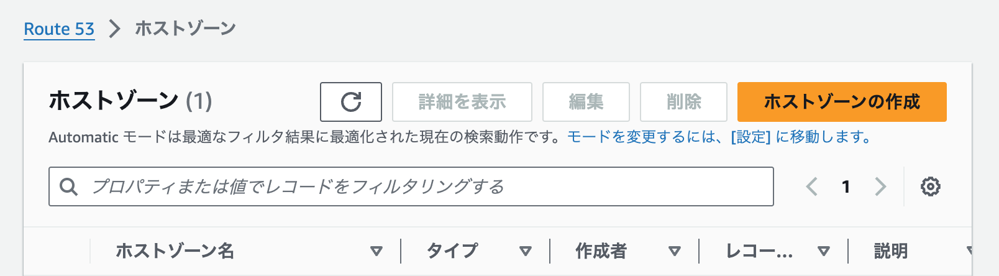
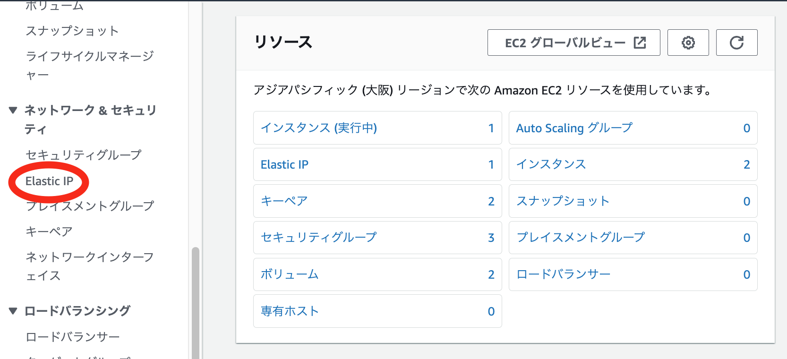
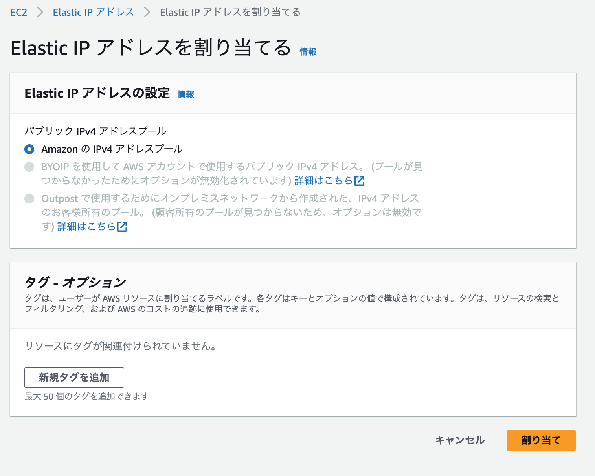
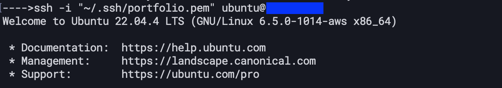
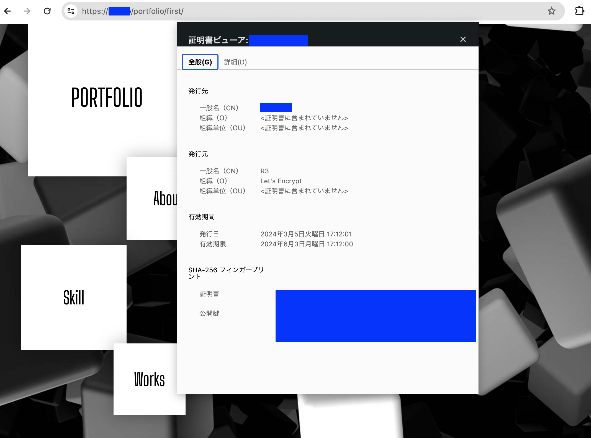

前回で EC2 によるポートフォリオサーバーの設定が完了した。今回は、前回課題に挙げた「通信を HTTPS 化する」部分をまとめる。
筆者はお名前.com でドメインを取得した。サービスによって異なるので、詳細は割愛する。
AWS にルートユーザーでサインインし、AWS の画面左上の検索窓で「Route 53」と入力して、Route 53 ダッシュボードを開く。

サイドバーまたは画面中央付近の「ホストゾーン」をクリックし、遷移先で「ホストゾーンを作成する」ボタンをクリックする。
以下に必要事項を入力する。基本的にはドメイン名に取得したドメインを記載するのみでよい。

ホストゾーンの作成が完了後に確認すると、以下のようなレコードの一覧が現れる。タイプ「NS」がネームサーバーであるため、これらの値を控えておく。

上記で控えたネームサーバーのドメインを、ドメインを取得したサービス上で設定する。お名前.com
の場合は、以下の通り
「ドメイン設定>ネームサーバー設定>他のネームサーバーを利用」
EC2 コンソールにアクセスし、サイドバーの「Elastic IP」をクリックする。
黄色の「Elastic IP アドレスを割り当てる」ボタンをクリックし、初期値のまま「割り当て」ボタンをクリックする。
Elastic IP アドレスの割り当てが完了したことを確認したら、EC2 インスタンスとElastic IP アドレスの関連付けを行う。


Route 53 ダッシュボードを開き、1. で作成したホストゾーンの詳細を表示する。
上図「レコードを作成」ボタンをクリックし、レコードを作成する。入力値は以下の通り。
レコード名:設定したい用途にあわせて(未入力可)
レコードタイプ:A - IPv4 アドレスと一部のAWSリソースに...
値:2.で発行した Elastic IP アドレス
設定が完了すると、取得したドメインでページにアクセスすることができる。

また、SSH 接続も取得したドメインでアクセスが可能になる。

Certbot 公式によると、snapd
という、RedHat や Debian
などの系列を横断したパッケージマネージャーを経由してのインストールが最近の一般的な経路となっているようだ。しかし筆者は、どうせ新しいパッケージマネージャーを導入するのであれば、すべてを新しいパッケージマネージャーで管理してしまいたくなる完璧主義である
ため、今回は、比較的古い方法で行うことにした。
以下のコマンドで、必要なパッケージをインストールする。
sudo apt install -y certbot python3-certbot-nginx
次に、ファイアウォールで HTTPS 通信を許可する設定を追加する。AWS EC2 で設定しているため、「EC2>セキュリティグループ>(インスタンスに紐づくセキュリティグループ)」に、以下のようなインバウンドルールを追加する形だと設定しやすい。
/etc/nginx/nginx.conf の
server_name を取得したドメインに書き換える。以下のように記述する。
default_type application/octet-stream;
server {
listen 80;
listen [::]:80;
server_name (取得したドメイン); # ここを修正
root /var/www/html;
index index.html;
}
sudo nginx -t で、設定ファイルに誤りがないか確認し、sudo systemctl restart nginx
で Nginx を再起動する。
以下のコマンドを入力して、証明書を取得する。
$ sudo certbot --nginx -d (取得したドメイン)
Saving debug log to /var/log/letsencrypt/letsencrypt.log
Certificate not yet due for renewal
You have an existing certificate that has exactly the same domains or certificate name you requested and isn't close to expiry.
(ref: /etc/letsencrypt/renewal/(取得したドメイン).conf)
What would you like to do?
- - - - - - - - - - - - - - - - - - - - - - - - - - - - - - - - - - - - - - - -
1: Attempt to reinstall this existing certificate
2: Renew & replace the certificate (may be subject to CA rate limits)
- - - - - - - - - - - - - - - - - - - - - - - - - - - - - - - - - - - - - - - -
Select the appropriate number [1-2] then [enter] (press 'c' to cancel): 2
Renewing an existing certificate for (取得したドメイン)
Successfully received certificate.
Certificate is saved at: /etc/letsencrypt/live/(取得したドメイン)/fullchain.pem
Key is saved at: /etc/letsencrypt/live/(取得したドメイン)/privkey.pem
This certificate expires on 2024-06-03.
These files will be updated when the certificate renews.
Certbot has set up a scheduled task to automatically renew this certificate in the background.
Deploying certificate
Successfully deployed certificate for (取得したドメイン) to /etc/nginx/nginx.conf
Your existing certificate has been successfully renewed, and the new certificate has been installed.
- - - - - - - - - - - - - - - - - - - - - - - - - - - - - - - - - - - - - - - -
If you like Certbot, please consider supporting our work by:
* Donating to ISRG / Let's Encrypt: https://letsencrypt.org/donate
* Donating to EFF: https://eff.org/donate-le
- - - - - - - - - - - - - - - - - - - - - - - - - - - - - - - - - - - - - - - -
以下のように HTTPS 通信に成功した。 